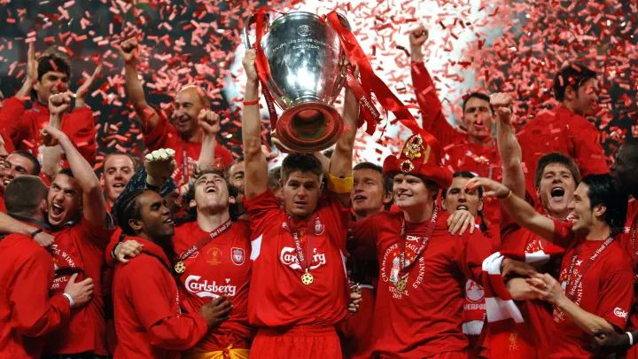
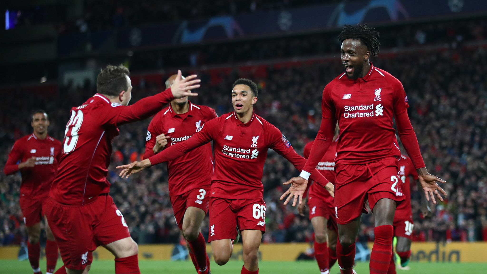
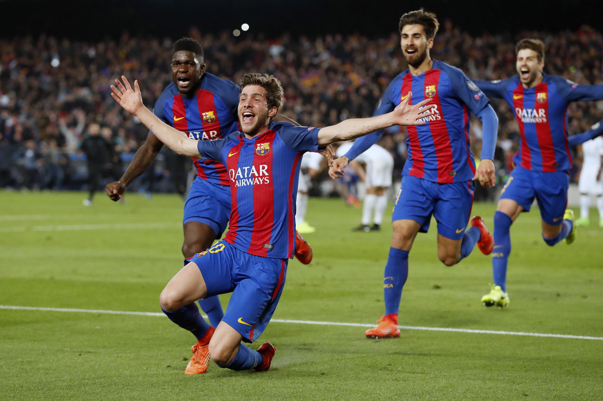
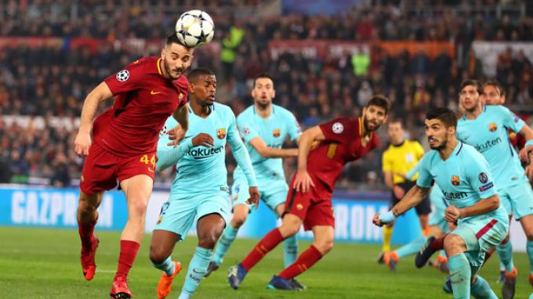
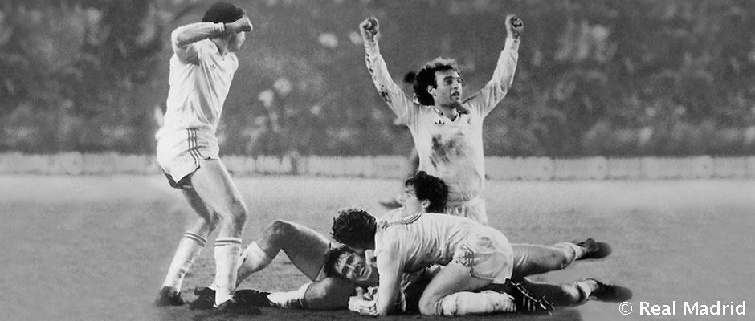
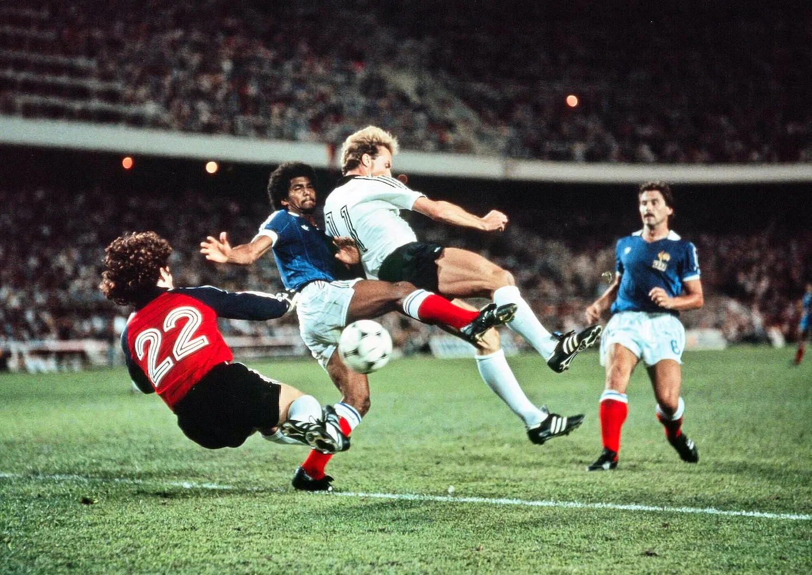
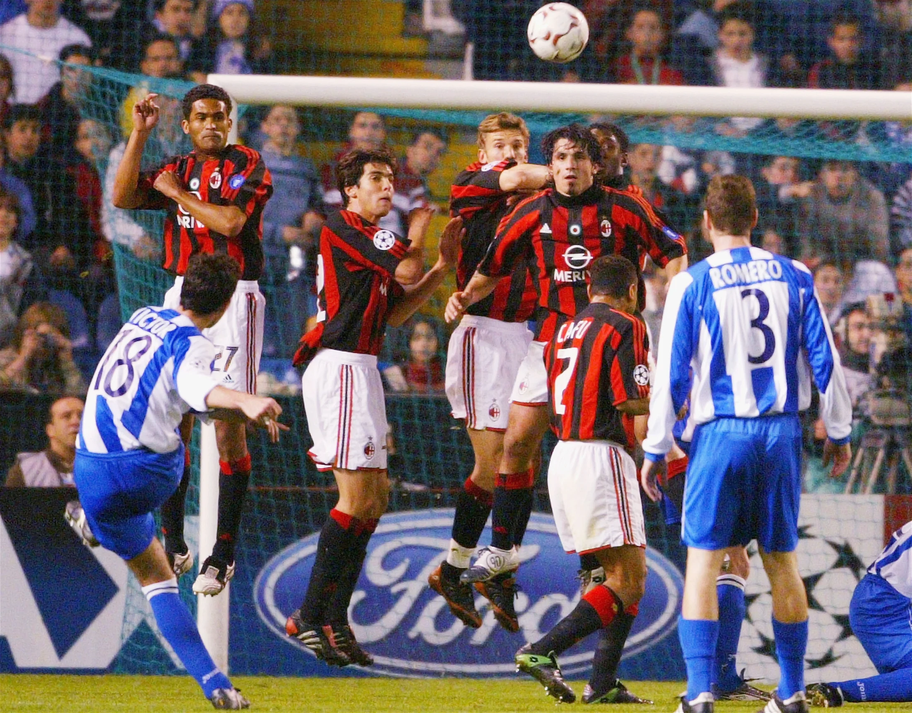
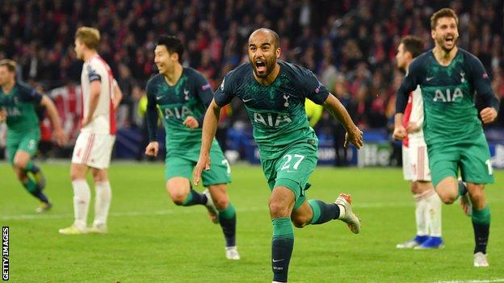
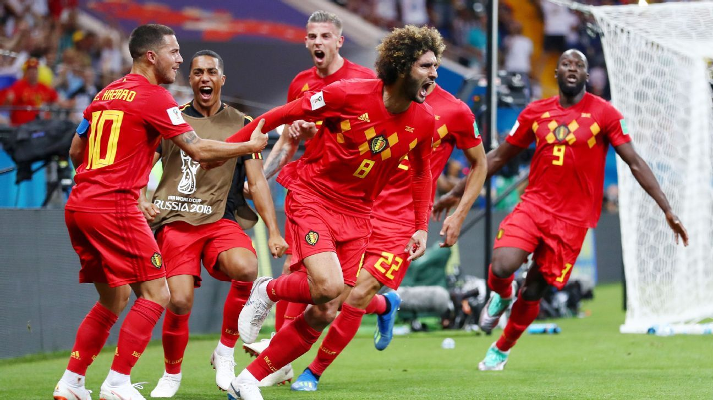

1. Liverpool vs Milan – 2005
The context of this match is what makes it the best comeback of all. AC Milan started the final the way teams only dream of after scoring their first goal in the first minute of the game! At halftime, they were up 3-0. This meant Liverpool needed three goals just to ensure the game headed to extra time. Rafael Benítez must be one hell of a motivational speaker as whatever he said to his team in these crucial moments worked. Within six minutes of the second half kicking off, Liverpool scored three goals! Although there were still 30 minutes of the game to be played, the score was now equal.
2. Liverpool vs Barcelona – 2019
Again, we find Barcelona on this list. This time, they are not the heroes of the story. Instead, they are on the losing end of a famous comeback in a Champions League semi-final against Liverpool. The first leg was played at Camp Nou. It was a weird match because Barcelona didn’t control it but somehow still managed to win 3-0, with one goal coming from a beautiful free-kick taken by Messi. In the second leg, Liverpool managed to score one goal before halftime. Wijnaldum scored two more goals, which means they were only one goal away from qualification!
The global population in 2001 stood at 6.19 billion. That amounts is nearly 4% of the world's population. This is a crazy football fact, isn't it?
3. Barcelona vs PSG – 2017
This fairly recent matchup is considered a crazy comeback for several reasons. In the first leg which was played at Le Parc des Princes in Paris, Barcelona lost by a humiliating score of 4-0. PSG clearly dominated the game and Barcelona needed to score at least four goals to push the second leg into extra time. The second leg matchup at Camp Nou started well for Barcelona with Luis Suarez getting a goal in the third minute. Before halftime, Barcelona had scored another goal, meaning they were only two goals away from qualification. In the 50th minute, Barcelona scored a third goal and the comeback seemed more possible than ever! But the team’s hopes were nearly shattered when PSG managed to bring a goal back. A single successful strike almost put an end to the game.
What would be more intriguing is that the above figure would increase by 309.7 million from 30.9 crore if we included the audience who did not watch coverage at home but caught the action on digital platforms, in public viewing, and/or in bars and restaurants.
4. Monaco vs Real Madrid – 2003
In the early 2000s, the Real Madrid squad was known as the “Galacticos” because it featured many brilliant players, including Zinedine Zidane, Ronaldo, Raul, Roberto Carlos, and Luis Figo to name a few. On paper, it was one of the best teams in football history. Naturally, many football fans thought they would absolutely destroy any team they played. So, when the team was drawn to play against AS Monaco in the 2003-04 UEFA Champions League quarter-finals, people thought the result would be all too predictable. In the first leg of the series, Real Madrid won 4-2, proving most football fans correct. It seemed like their ticket to the semi-final had already been stamped.

Paragraph 2. Remove if needed. Repeat the same thing.
5. Roma vs Barcelona – 2018
Before this match, Barcelona was seen as one of the best teams in football history. Naturally, they affirmed this idea when they demolished AS Roma 4-1 at the Camp Nou in the first leg of this Champions League quarter-final. Nobody thought the team capable of losing a three goal advantage against Roma. Although Roma wasn’t a bad team, Barcelona looked so much stronger. However, the second leg of this quarter-final turned into a nightmare for the Spanish team. It started with a quick goal from Edin Dzeko in the 6th minute.
6. Real Madrid vs Borussia Mon – 1985
In the 1985-86 season of what is now known as the UEFA Europa League, Real Madrid faced Borussia Monchengladbach in the round of 16. The first match was dominated by the German team, thrashing Madrid with a score line of 5-1. However, in the second leg, Real Madrid won 4-0. With two goals in each half, it was enough to allow Real Madrid to make it to the quarterfinals. Madrid would go on to win the cup that year. With how shocking each leg turned out to be, history might not be the same without this matchup.
7. West Germany vs France – 1982
In the semi-finals of the 1982 World Cup, France squared off against West Germany. Both teams looked strong and most fans knew it was going to be a good game. Both teams played hard, but after regular time, they were stuck in a 1-1 stalemate, which meant the game was headed to extra time. In the first 10 minutes of extra time, France scored two goals and it looked as if they had sealed the win. However, the Germans didn’t give up and they managed to score two goals too, which means the match went to penalties. So, after a 3-3 thriller, with four goals appearing in extra time, West Germany beat France 5-4 in a penalty shootout. Needless to say, this was one of the most dramatic and intense World Cup matches we have seen.
8. Deportivo la Coruña vs Milan – 2004
Between 2002 and 2004, AC Milan was one of the biggest teams in Europe. They won the Champions League in the 2002-03 season with a squad filled with the best players of the day, including the likes of Kaká, Seedorf, Gattuso, and Maldini. So, when Spanish outfit Deportivo la Coruña were drawn to face them in the 2003-04 Champions League season, they faced an uphill battle.
9. Tottenham vs Ajax – 2019
In the 2018-19 UEFA Champions League season, Tottenham Hotspur and AFC Ajax proved to be two of the tournament’s dark horses. Nobody was really expecting either of the teams to make it to the semi-finals. Tottenham performed amazingly against country rivals Manchester City in the quarter-finals. Ajax played beautiful football en route to the game, eliminating both Real Madrid and Juventus. Overall, going into the game, the Dutch side looked more confident and were playing better football. Few could dispute this as Ajax won the first game 1-0 in London. So, they had the advantage going into the second leg.
10. Belgium vs Japan – 2018
To say that this was a peculiar game would be an understatement. Belgium was the obvious favourite, but then, Japan got the first goal almost as soon as the second half began. Surprisingly, this was quickly followed by a second goal four minutes later. And with that, it seemed as if Belgium was in big trouble. It would be nearly 20 minutes before the Belgians brought a goal back. Similar to with Japan, the first goal was quickly followed by a second. With both teams on level pegging as injury time approached, it looked like the match was going to overtime. However, an excellent counterattack by Belgium allowed them to score the winning goal in the last minute of the game.
